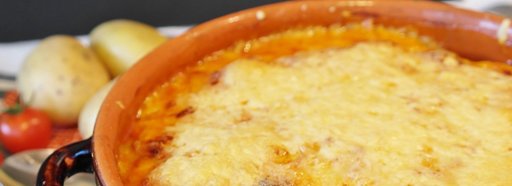

Kartoffelauflauf

Ohne Kartoffelauflauf, kein guter Wochenablauf
Dieser Kartoffelauflauf ist eine inspiration von Steffen Henslers schnelle Nummer.
Er passt gut mit Cordon Blue zusammen.
Das wird benötigt
- 1 Kilo Kartoffeln (mehligkochend)
- 2 Knoblauchzehen
- 2 Mozarella
- 1 packung geriebener Ofenkäse
- 3 Flaschen Rama Cremefine 7%
- Verschiedene Kräuter. (Salz, Pfeffer, Ankerkraut Auflaufkräuter, Chilliflocken)
Die zubereitung:
- Kartoffeln schälen und in scheiben schneiden
- Kartoffeln, Kräuter, Cremefine und Knoblauch in einer schüssel vermischen.
- Während alles für 10 minuten in der Schüssel ruht, den ofen auf 200° umluft vorwärmen
- Eine auflaufform mit Butter einschmieren
- beide Mozarellakugeln klein schneiden und beim einfüllen in die form vermischen
- den auflauf für 40 Minuten in den ofen tun
- nach 40 minuten den geriebenen käse drauf kippen und für weitere 5-7 Minuten drin lassen
Guten Hunger!